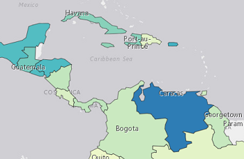

This application utilizes human event data pulled in real-time based on a user selected query.
You have a few options available including news language selection and search by country to allow for
an enriched experience. There are are also two ways to visualize the data. The main is using points
classified based on the amount of mentions near a particular location. Darker and larger points indicate more mentions.
The second method utilizes a polygon choropleth map with a similar premise.

The country aggregated method utilizes a polygon choropleth map similar to the point density map, however density is based on
aggregation of points at the country level. Also unlike the point method, raw counts are not displayed due to the fact that some countries
are mentioned in media more than others. To fix this the data are normalized by dividing the tallied mentions over 24 hours of the query
within a country by the number of times that country or locations within that country were mentioned resulting in a percentage.
Powering this project is the ArcGIS API for JavaScript version 4.7. Real-time news data (within 24 hours old) is provided by the GDELT
API 2.0. To learn more about gdelt, click here